1. Actividad 1 — Representación de la información en el computador
Fecha de entrega: 27/11/2023 — Dr. Juan Pedro Cerro Martínez
Parte 1: Carga de programas como procesos
a) Aplicación CON hilos: Google Chrome — PID: 8184.
b) Aplicación SIN hilos: Blender — PIDs: 11432, 25508.
Parte 2: Hackeando archivos
Identificación de archivos mediante cabeceras hex. La fecha de modificación es un metadato independiente del contenido binario; un editor de texto plano no puede modificarlo. Se necesita PowerShell o software especializado (FileAlyzer).
Parte 3: Sistemas de numeración
Conversión hex → decimal → binario → ASCII. Ejemplo: 42₁₆ = 66₁₀ = 1000010₂ = B.
Serie completa: B ` q o d US C h d l (ASCII).
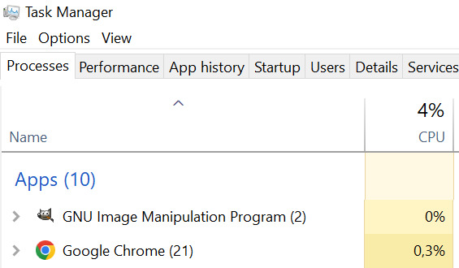
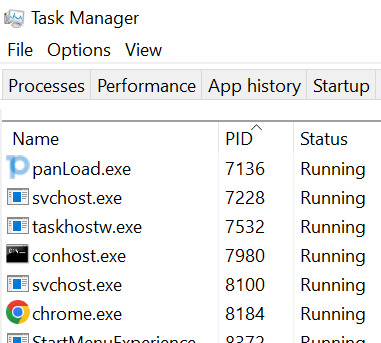
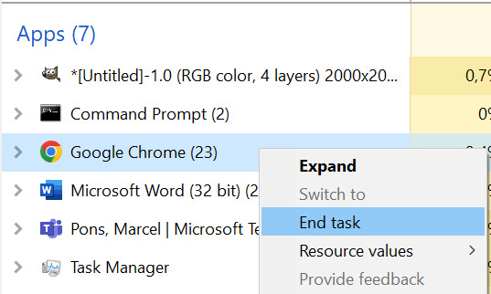
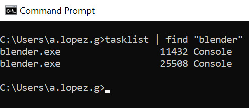
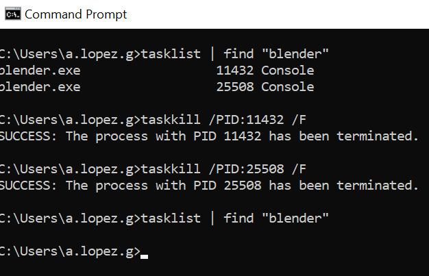
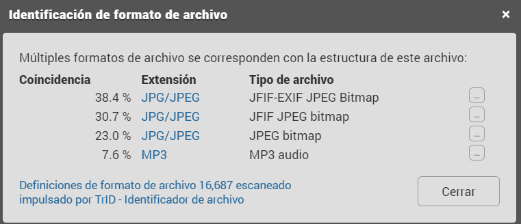
↑ Volver al índice
2. Actividad 2 — Introducción a las redes de procesamiento de datos
Fecha de entrega: 05/12/2023
Parte 1: Modelado de redes
Topología en estrella para universidad con tres departamentos: Inteligencia de Negocios y Secretaría Académica por Ethernet cableada; Recepción por WiFi 802.11.
Servidor HOST con 4TB y RAID5. Un único switch minimiza complejidad y coste. Ethernet soporta 10 Mbps – 100 Gbps.
Parte 2: Presupuesto
ETDs con Xeon + SSD 1TB + Linux (Inteligencia), Intel Core i5 + Windows 11 (Secretaría), portátiles (Recepción). Se incluye IGI andorrano.
Parte 3: Protocolos de comunicación
| Protocolo | Capa TCP/IP | Descripción |
|---|
| Ethernet | Enlace | LAN mediante MAC y CSMA/CD. |
| DNS | Aplicación | Traduce dominios a IP. |
| TCP | Transporte | Conexión fiable con control de flujo. |
| HTTP | Aplicación | Transferencia web (GET, POST, PUT, DELETE). |
| ICMP | Internet | Notificación de errores. |
| FTP | Aplicación | Transferencia de archivos (FTPS/SFTP seguro). |
| NAT | Internet | Compartir IP pública (estática, dinámica, PAT). |
Solución: LAN (área limitada, topología estrella, Ethernet+WiFi, servidor central).
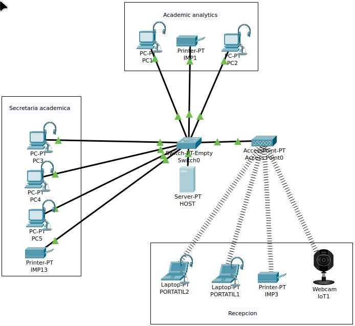
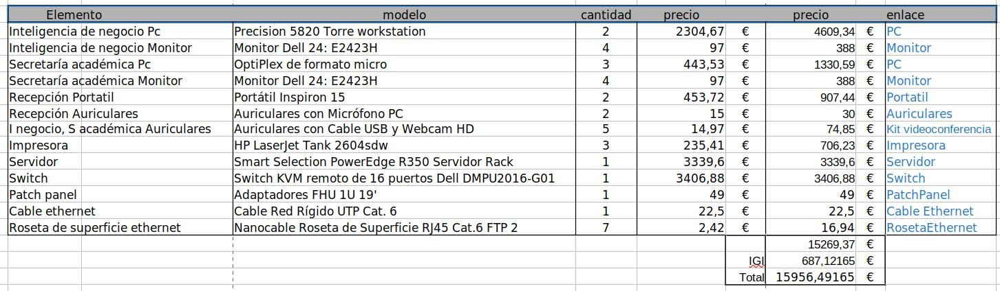
↑ Volver al índice
3. Actividad 3 — Configuración y auditoría forense de computadores en red
Fecha de entrega: 11/12/2023
Parte 1: Configuración de red
| Subred | Dispositivos | Rango IP |
|---|
| 192.168.1.0/24 | PC1, PC2, IMP1, HOST | .10 – .13 |
| 192.168.12.0/24 | PC3–PC5, IMP2–IMP3, PORTÁTIL1–2, WEBCAM | .10 – .17 |
Puerta de enlace: 192.168.1.1 y 192.168.12.1. Máscara: /24.
Parte 2: Análisis forense
- Captura: 2023-01-13 13:15:40, duración 5:22, 59.109 paq., 59,47 MB.
- Equipos destino desde 192.168.0.30: 131.
- Tasa media: 11.855 bits/s, pico 273.489 bits/s.
- Rangos más usados: 1280–2559, 40–79, 80–159 bytes.
- Protocolo más usado: UDP (más picos). Tráfico no homogéneo. No hay relación directa DNS-UDP (capas distintas).
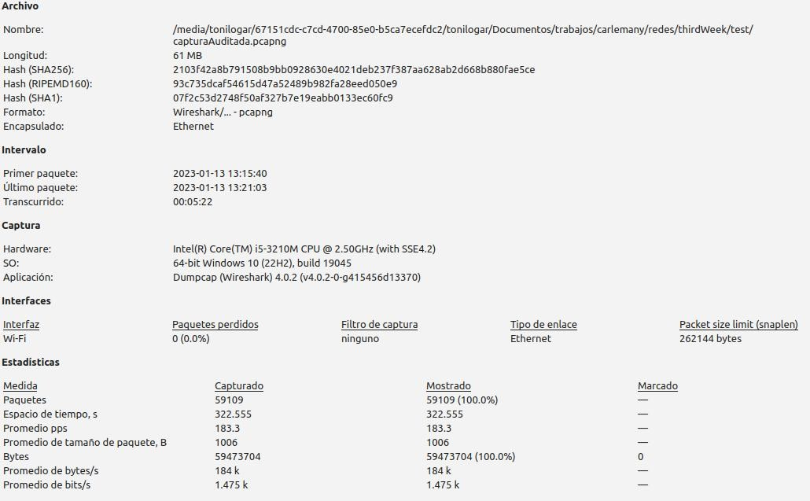
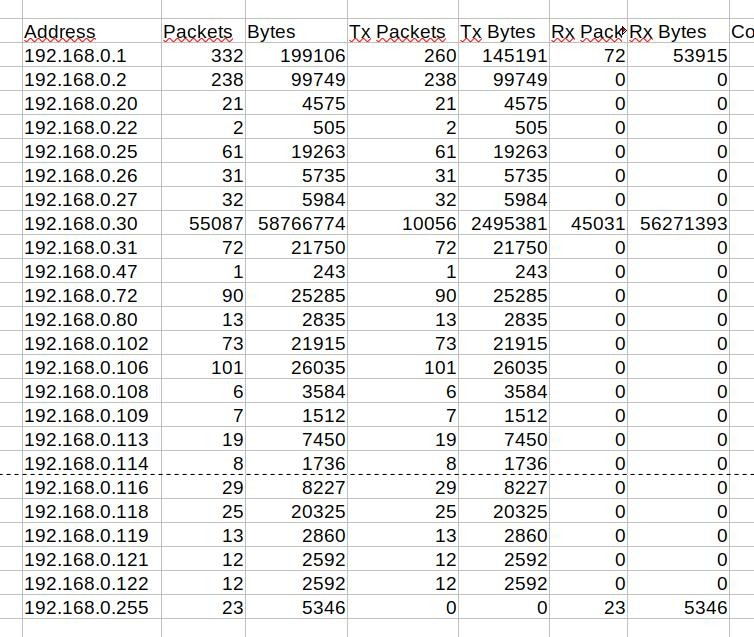
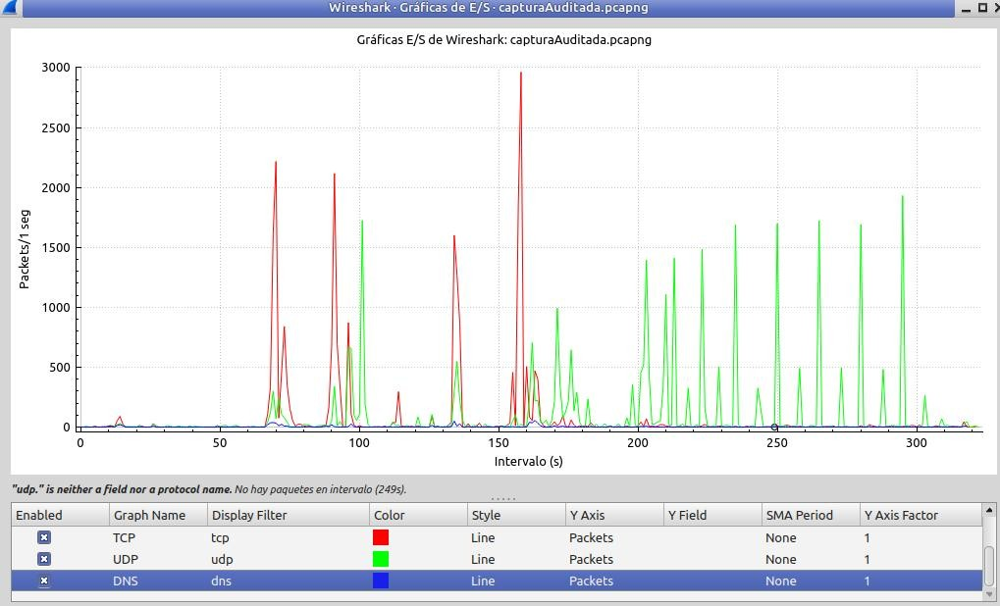
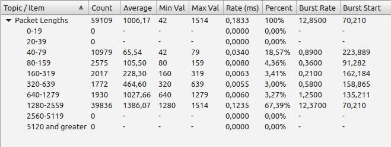
↑ Volver al índice